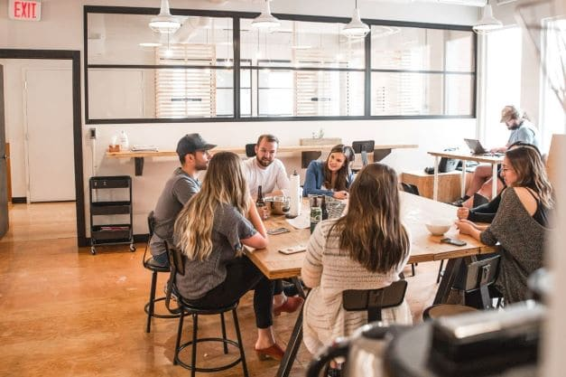
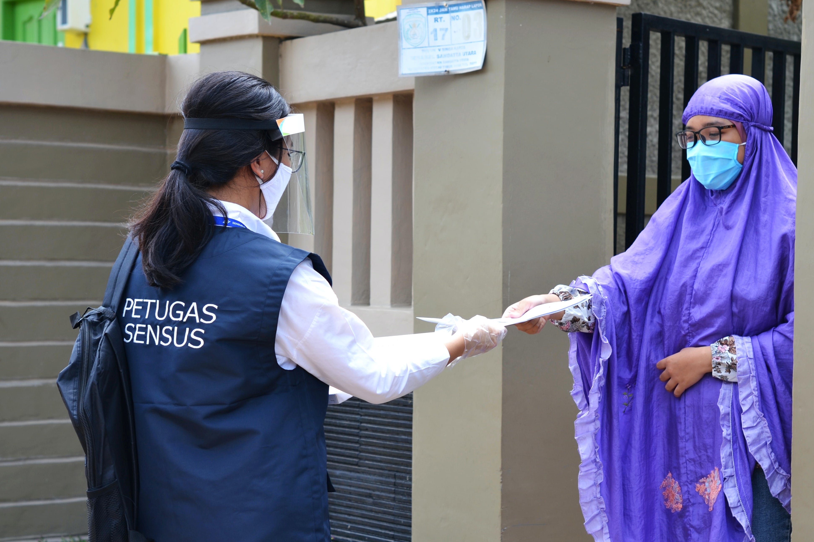
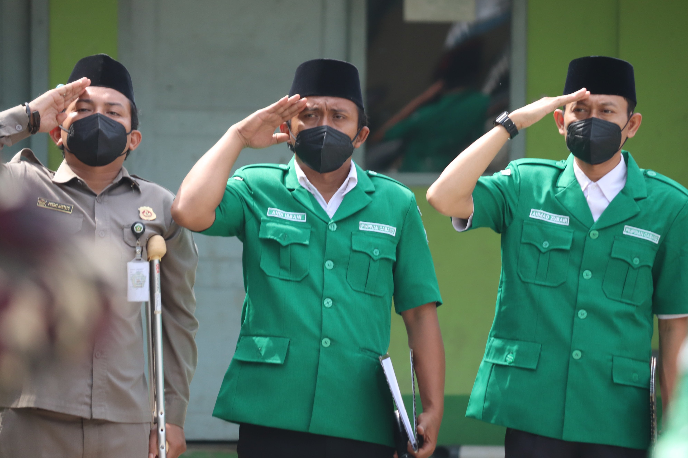

Galeri Sensus
Persiapan Sensus
Rapat Persiapan di BPS RI
Rapat Persiapan di BPS Provinsi
Rapat Persiapan di BPS Kabupaten Kota
Sosialisasi

Sosialisasi di BPS RI
Sosialisasi di BPS Provinsi
Sosialisasi di BPS Kabupaten Kota
Pelaksaaan Sensus

Pelaksanaan di BPS RI
Pelaksanaan di BPS Provinsi
Pelaksanaan di BPS Kabupaten Kota
Pengolahan Data

Pengolahan di BPS RI
Pengolahan di BPS Provinsi
Pengolahan di BPS Kabupaten Kota
Serba-serbi

Serba-serbi ST2023
Serba-serbi ST2023 Provinsi
Serba-serbi ST2023 Kabupaten Kota